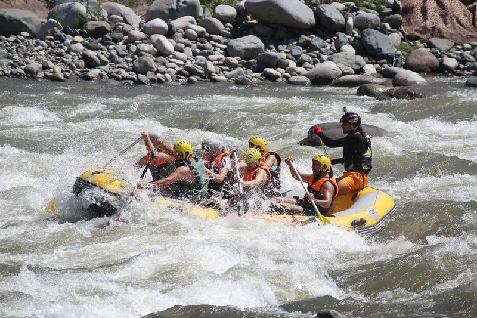
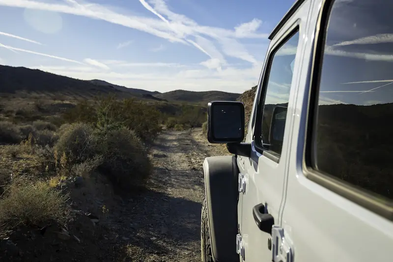

Hiking & Trekking
Be ready on the trail.
Built for the unexpected
An offline-first AI health assistant for the places where help is far away.
No signal? No problem.
From remote trails to backcountry roads.
Guidance grounded in established medical resources.
Designed for critical moments.
Be prepared
Get clear, structured guidance for injuries, sudden illness, and environmental emergencies, even when you're offline.
Use cases
The same calm, step-by-step guidance, whether you are a day's walk from the trailhead or thirty-five thousand feet up.
Be ready on the trail.

Handle the unexpected.

Stay prepared wherever you are.
Access guidance when connectivity is limited.
Safety
If you can reach emergency services by any means, do that first.
Bring reliable medical guidance wherever life takes you.
Download the App